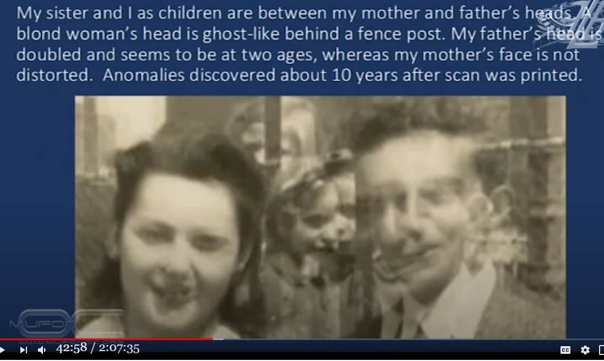

Paul Davids : The picture taken seven years before I was born, had me and my sister in it. → I've solved this mystery.

The photo above was taken by paranormal researcher Paul Davids in a lecture. Note the center of the photo, where his and his sister's faces can be seen between the two adult men and women on either side. Paul Davids claims that this photo is paranormal.
The mystery of this photo is solved below. In the old days of silver halide film photography, we saw several "photographs in which legs, arms, faces, etc. were inexplicably visible," etc., which can also be explained by the following mechanism.
History
(2020-09-08) The identity of the mystery is explained in detail. (2020-09-07) Introductioncitation
- 41:00-43:30 - Family Photo ・Below is a photo taken seven years before I (Paul Davids) was born.
Transcript of the statement
- In case the video is deleted, the automatically generated text is quoted below in its unedited form.i'm going to 39:47 tell you are hard to believe 39:49 and they were hard to believe for me too 39:51 i want to assure you 39:52 that nothing of what i'm claiming is 39:55 made up 39:56 or invented i'm just being honest i'm 39:59 just going to convey 40:00 the facts as they happen to me and 40:03 here's a big one 40:05 all right that's me with my mother 40:08 who's deceased she died at age 92. 40:12 and this is a picture taken on the day 40:14 of 40:16 their engagement i wrote 1941 there it 40:20 might be 1940 i'm not sure but it 40:21 doesn't really matter it's my mom 40:23 mom and dad and 40:27 this picture that's all blurred and 40:31 you know you can't really make it out 40:33 there's something wrong with this 40:34 picture 40:35 when i scanned it i didn't look at it 40:37 very carefully i was 40:39 scanning family pictures to put in an 40:41 album i scanned this one i said oh 40:42 that's a dud 40:44 should i throw it away you know does 40:46 this even belong in a family album 40:48 and i said well it's historic i'll keep 40:50 it anyway 40:52 and it wasn't until about 10 years later 40:55 that i took a careful look at the 40:56 picture and i want to show you what i 40:59 discovered 41:00 okay you see it says 1940 at the top 41:03 it says engaged it says brooklyn college 41:07 now look this is a sticky on it was 41:10 in an album and it's not blurred the 41:13 word engaged is 41:14 not blurred 1940 is not blurred but 41:17 there's something 41:18 really weird going on in that picture 41:21 and i'm going to go closer in 41:23 to start talking about it in detail my 41:26 dad's got two left arms 41:28 there 41:32 they're holding hands there um let's go 41:35 closer still you can see how 41:37 in focus everything is except the 41:39 picture itself 41:42 now look my father has two noses here 41:46 this nose is his nose as uh he looked as 41:50 a young man at that age 41:51 this was his nose when he was like 40 or 41:54 50 years older than that 41:56 it was larger he has two ears here 42:00 he has three ties 42:04 she has one and a half pendants 42:07 now if you want to say double exposure 42:09 no no double exposure everything would 42:11 be she he has three ties she'd have 42:13 three pendants 42:14 but that isn't what it is but the most 42:17 strange thing of all 42:18 is that in between their two heads 42:22 are two children 42:25 this was taken seven years before i was 42:29 born 42:31 that's me as a boy that's my sister 42:37 and behind there's a blonde woman 42:42 you can see her partner hair her hair 42:44 her nose there 42:46 i don't know who that is 42:49 but i know she also shows up in the left 42:53 side of the picture i want to go in 42:56 closer so now you can really see 43:01 that's definitely me as a boy that's 43:03 definitely 43:04 my sister i would say that she was 43:07 around 43:10 for or five and i was 43:14 probably eight or nine so 43:18 you want to believe in time travel how 43:20 does the picture taken in 1940 43:22 have me and her in it i haven't got a 43:25 clue and i almost threw the picture away 43:29 now i said my mother died in 43:33 she was 92 died in august of 2013.Video of the lecture (2:07:35)
Non-Conventional Consciousness and it's link to Motion Pictures 2020-09-07 (2020-09-07)
Preface
- Why was his future image captured in a photograph taken before his birth? This mystery will be solved specifically below.Solving the mystery of the photo in question
- Photographic paper for film photography often warps and rises in the center of the paper(*1). The central part of the image is occupied by the subject that is the focus of attention. In this case, it could be two engaged couples or their children (siblings). - The photographic paper of the photograph is then pasted into the family album. In some cases, the surfaces of the raised center of the photos pasted on opposite sides of the album adhere to each other. When the album is opened, the adhered area peels off and sticks to the photographic paper on the opposite side. - To put it plainly.... Suppose the album has a photo of the engagement in question on the left page and a photo of the siblings on the right page. Since the album is kept closed, the surfaces of the photos may adhere to each other(*2). When the album was opened, the photosensitive part of the adhering area must have been thinly peeled off and transferred. (The photo of the siblings with their faces peeled off was destroyed, so it probably no longer exists.) - This is illustrated below. - From the writing marks in the lower right margin of the photo in question, it can be inferred that this photo was removed from an album.- Paul Davids only saw the photo in the state it was removed from the album, so he assumed it was paranormal because he "saw me and my sister in the photo seven years before I was born.
supplement
- Paul Davids denies that the photo of the engaged couple has multiple exposures, for two reasons: (1) The mother's necklace is double layered, but the father's tie is triple layered. (2) The father's left arm is doubled. Father's left arm is doubled, but they are far apart. but we can conclude that the mother was only relatively still. - Paul Davids interprets these double and triple sections as paranormal rather than multiple exposures, but that's a stretch. - Paul Davids is a filmmaker and a visual expert. The fact that he is so oblivious to what I, a layman, would have immediately thought of is probably because he has been dominated by his belief in the paranormal.(*1)
- The back side of a developed photograph does not absorb water because of the resin coating, but the photosensitive material side absorbs water and stretches. As a result, the photographic paper warps in a shape where the image surface is convex.（*2）
- It is not uncommon for the surfaces of photographic paper to stick together. A concrete example of this is shown below.Is there any way to cleanly remove old photos that are stuck together surface to surface? These are old photos, over 20-40 years old, and I stored them in a humid warehouse about 10 years ago. - When I took them out a few years later and tried to open them, I couldn't see them because the surfaces of the photos were stuck together. (It is not the kind of album that is sandwiched between thin membranes like now, but the kind that is held in place by something like a triangular corner.) If you know how to remove it without tearing it, please let me know. ref: Is there any way to cleanly remove old photos that are stuck together surface to surface? - Yahoo! 知恵袋 - https://detail.chiebukuro.yahoo.co.jp/qa/question_detail/q1046328970The photos got stuck together and I failed to peel them off. I want to restore a photo that has turned out this way. If you know how to do this, please tell me! ref: The photos got stuck together and I failed to peel them off. Yahoo!知恵袋 - https://detail.chiebukuro.yahoo.co.jp/qa/question_detail/q13175685323Regarding the photo with the printed surface stuck to it. Due to my poor storage, a photo I printed at a photo shop a long time ago and a photo I printed at home the other day got stuck together. I was in such a hurry that I peeled it off and left the printed side of the new photo on the old one. It is an old photo, so there is no film left, and I am hoping it can be cleaned up. Since I have removed the film, is there anything I can do? ref: Regarding the photo with the printed surface stuck to it. - Yahoo!知恵袋 - https://detail.chiebukuro.yahoo.co.jp/qa/question_detail/q14133236974(2020-09-08)
First published article (Japanese)
Paul Davids : 私が生まれる 7年前の写真に私と妹が写っていた。 （＋謎解き） (2020-09-08)
Thanks
- Translated with www.DeepL.com/Translator (free version)
(2022-06-21 : translation)
Degree of completion of this article: